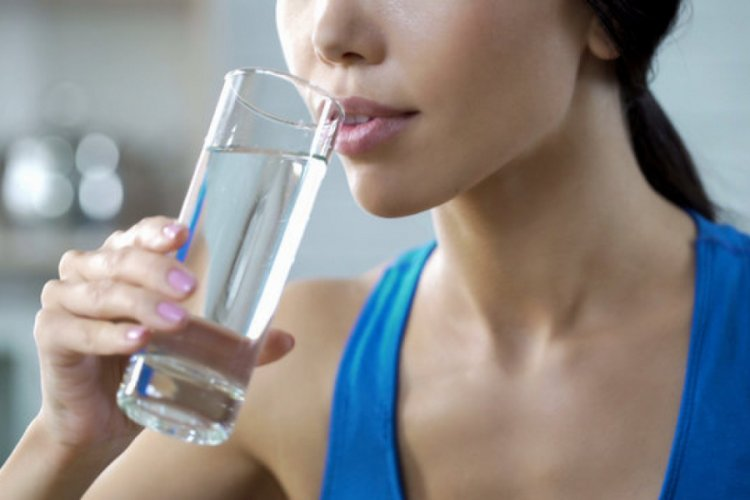

Drinking Water
70% of the world is water and approximately 0.3% of the water resources on earth are usable and potable. It is ideal if the pH value of the water is between 7.5 - 8.5, that is, alkaline. Labels of drinking water should be read, waters with pH values within these ranges should be preferred.
Nothing can replace water!
Water consumption is provided by all beverages and foods other than alcohol, such as milk, tea, fruit juice, as well as alone, but it should not be forgotten that these drinks will not replace water. Until the body is dehydrated, the feeling of thirst does not occur. Therefore, it is very important to drink water before getting thirsty. Children and elderly people should be reminded to drink water, as they feel less thirsty than adults.
Water need in healthy people; It varies according to age, climatic conditions, food consumed and physical activity.
An average of 2-3 lt per day for adults.
1-1,5 lt for 4-8 years old children.
1,5-2 lt for 9-13 years old children.
2-2.5 lt for 14-18 years old teenagers
It should be consumed consciously to ensure the continuity of water.
Drinking enough water provides them
1-It prevents bad breath.
2-It increases the blood volume, quickly carries the oxygen and nutrients required for the cells and ensures a healthier heart.
3-It prevents hair problems such as broken, dandruff, and shedding.
4-It helps to eliminate digestive problems such as constipation and intestinal laziness.
5-Helps prevent spasms and cramps during exercise.
6-It regulates brain functions such as forgetfulness and distraction due to dehydration.
7-Water is a pioneer in fighting stress.
8-Milk maker is the most important resource for breastfeeding mothers.
9-Reflux is good.
10-Contributes to body resistance while fighting infectious diseases such as influenza.
11-It has important effects on the protection of skin health. People who drink sufficient amount of water moisturize, shine and gain a healthy and young appearance.
12-It balances body temperature.
13-It provides removal of edema from the body.
14-It runs and speeds up the metabolism in people who drink enough water.
15-Drinking water protects from kidney ailments